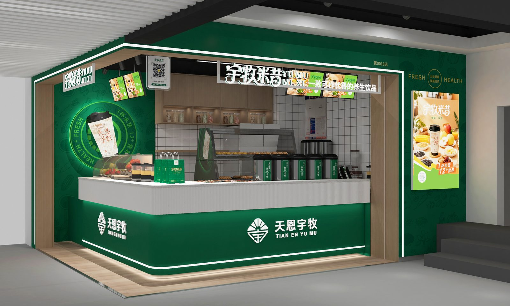
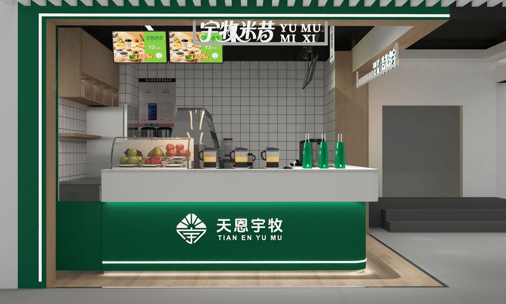
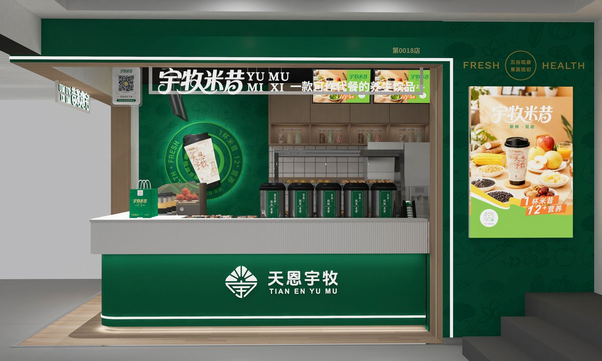
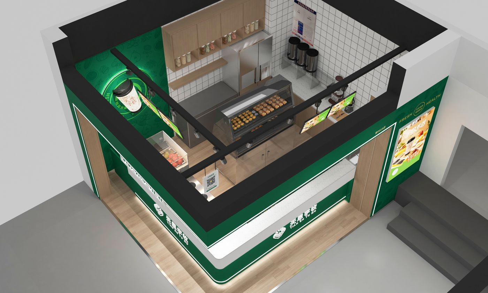
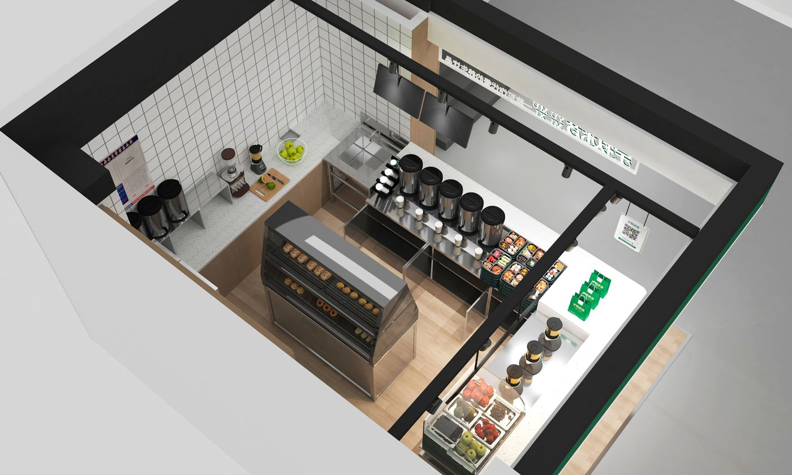
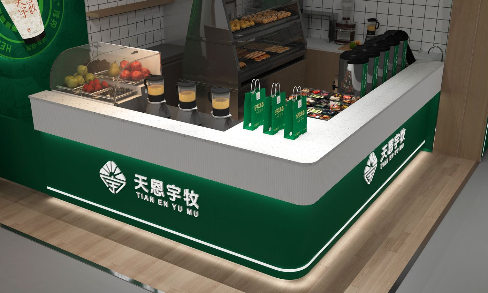

项目案例 / CASE STUDY · 06
宇牧米昔品牌饮品店
YUMU MIXI BRAND BEVERAGE STORE

以自然养生为核心理念的代餐饮品店。
A natural-health drink store — within 30㎡, brand color, cup forms and lighting build a calm, healthy atmosphere.
在仅 30㎡ 的有限空间内，通过品牌色、杯子造型与灯光营造自然、健康、舒适的品牌氛围。
职责定位 / ROLE
空间设计师
SPATIAL DESIGN
工作范围 / SCOPE
门店空间设计 · 效果图 · 落地配合
Store design · Visualization · Delivery coordination
02 / 空间呈现
空间呈现 / SPATIAL PRESENTATION
绿色与白色作为品牌主色贯穿空间，在紧凑面积内建立清晰的功能分区与品牌记忆。

03 / 空间节点
空间节点 / SPATIAL MOMENTS
柜台、货架与操作区的组织，让小店兼具效率与体验。<br>功能与体验 · FUNCTION & EXPERIENCE


04 / 细节与场景
细节与场景 / DETAILS & SCENES
灯光与材质在有限空间内营造出舒适的品牌氛围。

05 / 落地呈现
落地呈现 / BUILT STORE
项目已建成并营业。

项目总结 / PROJECT SUMMARY
小空间，更需要精准的设计语言。
Small spaces demand precise design language.